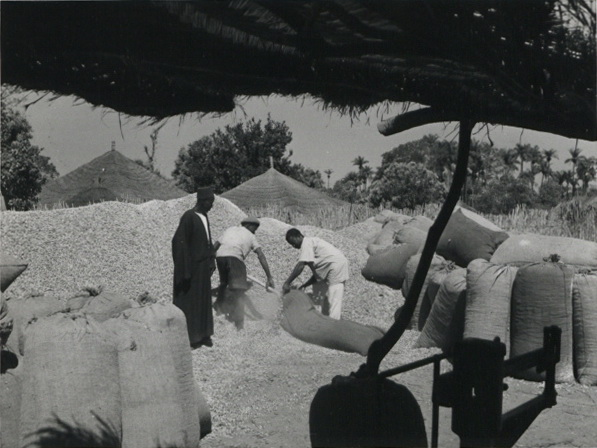

Abubacar Djamanka and Amadu Tidjani Cande
Abubacar Djamanka lives in the town of Fass in northeastern Guinea-Bissau, just by the border in Senegal. Fass is an important religious village tied closely to the religious center of Medina Gounass in southern Senegal. Abubacar’s parents were from further south in Guinea-Bissau in the region of Forriá, and migrated north before he was born. He said life was difficult during the colonial period because of the high taxation rates, which is part of the reason he left seasonally for fourteen years to harvest peanuts in Senegal. During the war for independence, he refused to fight for either side, but stated that one of the reasons many fought for the Portuguese was that they paid their soldiers, which was important for those looking to support their families.
During the colonial period and the war for independence, life was very difficult in Guinea-Bissau. However, after independence, Abubacar credited the government of Luis Cabral for providing food and helping farmers be more productive. In recent years, he said, Fass has become increasingly tied to its neighbor Senegal, as weekly markets have made it easier for Senegalese goods to come to Guinea-Bissau and for Bissau-Guineans to go to Senegal to buy things. Because of Fass’ border location, it is much easier for people to get goods in Senegal than in Guinea-Bissau, where infrastructure tends to be worse.
Interview
During the colonial period, were people used to going to Senegal? What did they look for there?
Many people would go to Senegal. They were looking for work there.
What kind of work?
They would dig up peanuts. I went there for fourteen years.
Where?
I went to Mbacké for three years. I also worked in Keur Madio, Pakess, Thiadiaye, Bambey, and Gada.
Did you have to have someone to host you?
At first, we did not have a host. The first time, me and my children, we eventually stayed with a woman named Neene Galle [“Mother of the House”].
Your children came too?
Yes. I took my three or four children.
Your wife. Did she go? Or did she stay here?
She was here. Only her.
When you went, did someone pay you to dig up peanuts or give you a field to farm?
Someone had to give you a field to dig up peanuts. You would discuss if they had a field, and if they did, they would give you money [for your work].
Did they give you rooms to sleep, or did you sleep outside?
We did not have rooms. We slept outside.
